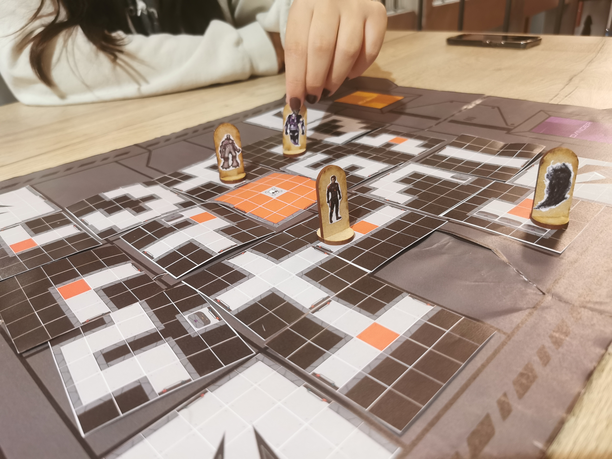

A.I.: Artificial Infiltration

A.I. is a board game that 2 to 4 players can play!
You have to decide which faction to control to ensure that they can destroy the rogue AI and retrieve their knowledge and power.
In this board game, I designed all of the characters storylines and the text for each card.
 Script Example: The Sole Survivor - BinkunnA lone goblin that managed to break itself away from the mass-mind control of the rogue AI. As he breaks free from the cyborg implants he watches his friends and family becoming foe towards him. Desperate but hopeful he won't stop until he gets everyone back.